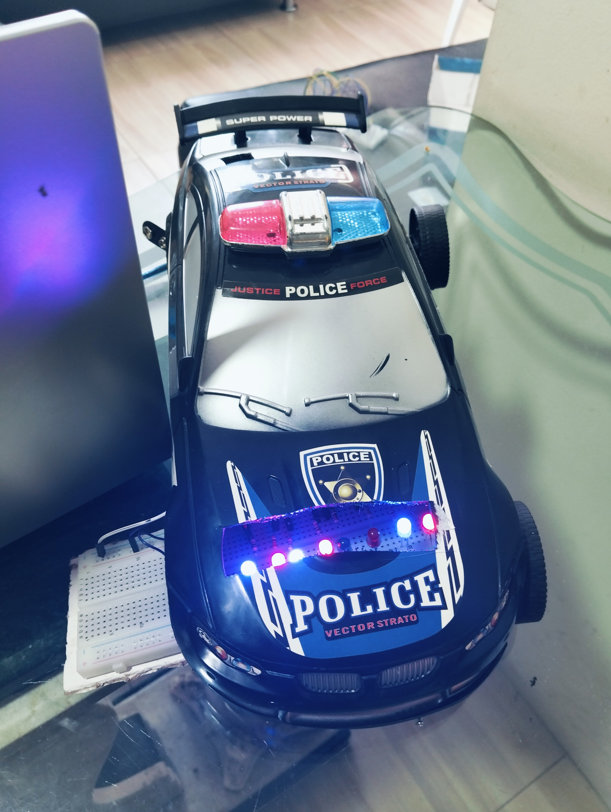
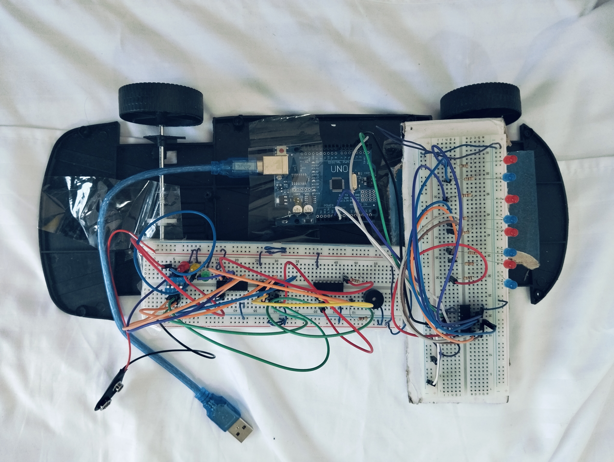
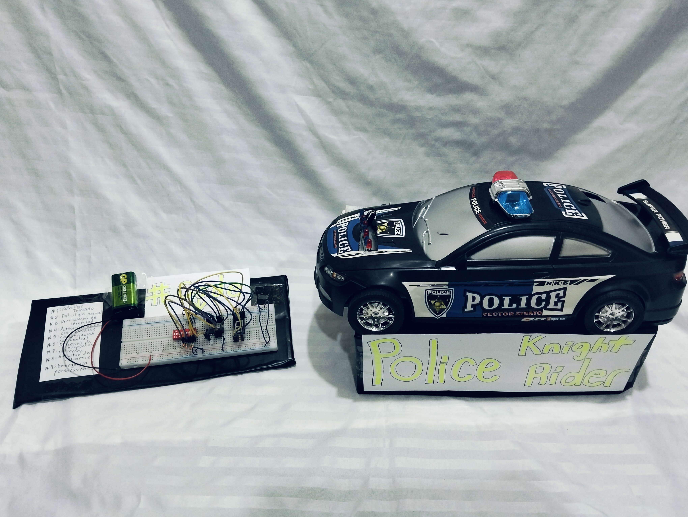

Car Rider Police - Lógica Digital
Descripción del Proyecto
Este proyecto implementa un circuito con Arduino y el registro de desplazamiento 74HC595 para controlar múltiples LEDs utilizando la menor cantidad de pines de salida posibles del microcontrolador.
Se programó un patrón dinámico de luces secuenciales simulando el efecto visual de una patrulla ("Carro Fantástico"), optimizando el uso de la memoria y el rendimiento del hardware.
Tecnologías Utilizadas
Aprendizajes Clave
- Manejo y cascada de registros de desplazamiento de 8 bits.
- Optimización de I/O en microcontroladores.
- Diseño y ensamblaje de prototipos en protoboard.
Galería del Proyecto


